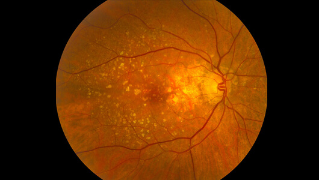
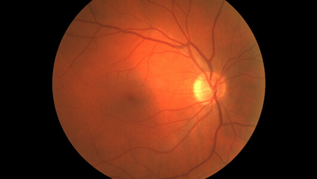
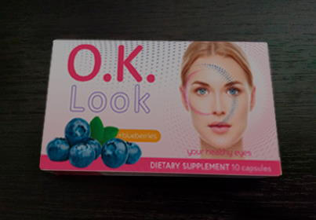

Oamenii de știință au evaluat impactul computerelor și a gadgeturilor asupra re0zultatelor corecției vederii cu laser. Imediat după operație, miopia, hipermetropia și astigmatismul dispar complet. Dar cu cât pacientul lucrează mai mult la computer, cu atât efectul operației scade. Peste 1-2 ani, unii dintre ei sunt nevoiți să revină la ochelari sau lentile.
La studii au participat mai mult de 5 mii de persoane care au trecut printr-o operație de corecție cu laser. Absolut toți au petrecut zilnic câte 8 ore în fața computerului, a televizorului sau a smartphone-ului. Specialiștii au studiat diagnosticele și au ajuns la concluzii defavorabile.
Iată ce spune șeful clinicii, Bernard Matei.
Înainte de operație, toți participanții au avut tulburări vizuale ușoare și moderate: miopie, hipermetropie, astigmatism, dificultăți de focalizare etc. După corecția cu laser și-au recăpătat aproape imediat claritatea vederii. 80% au renunțat la ochelari și lentile. Însă la cei care sunt ocupați cu munca intelectuală, efectul operației a scăzut treptat timp de 1-2 ani. La câțiva dintre ei situația s-a agravat și mai tare.
Câteva cazuri tipice.

Așa vedea lumea una dintre participante - o femeie de 39 de ani, contabil de profesie, își petrece în fața computerului 7-11. Înainte de corectarea vederii, purta lentile de contact.
Acum un an, a venit la clinica noastră pentru corecția chirurgicală a hipermetropiei. Dar, după 2 ani, are din nou nevoie de lentile.


Imaginea retinei unui alt pacient - un programator de 27 de ani, care s-a adresat la noi pentru corecția cu laser a astigmatismului.
Intervenția chirurgicală l-a ajutat pentru o perioadă. Pacientul a învățat să trăiască fără ochelari.
Dar un an mai târziu, a revenit pentru corecție repetată. Își petrece foarte mult timp la calculator și vederea a scăzut din nou.

Astfel de istorii sunt foarte multe. Cu timpul, munca în fața computerului reduce la zero efectul intervenției chirurgicale. Când o persoană stă nemișcată și privește ecranul câteva ore la rând, mușchiul ciliar care sprijină cristalinul, devine tensionat. Acest mușchi este responsabil pentru acomodare-capacitatea de a vedea la distanțe diferite. În timp, acomodarea slăbește, iar vederea se înrăutățește brusc.
Stând ore în șir în fața computerului, slăbește circulația în cristalin și retină, ceea ce agravează miopia și hipermetropia, iar de-a lungul anilor, crește riscul de cataractă, glaucom și alte boli periculoase.
Dacă pacienții noștri ar fi evitat să stea în fața computerului și a televizorului, efectul corecției cu laser ar fi durat mai mult. Totuși, jobul a 70% dintre subiecți este legat de munca intelectuală și renunțarea la realizările civilizației ar conduce la probleme mult mai grave decât vederea slabă: lipsa de bani, sentimentul de nemulțumire etc. Astăzi este imposibil să ne imaginăm viața fără gadgeturi. Nici nu e cazul, de altfel lumea s-ar lipsi de milioane de savanți, programatori, designeri, jurnaliști, analiști financiari etc.
Cum puteți totuși să vă păstrați vederea, dacă munciți în fața computerului?
Vă spun din start că intervenția chirurgicală nu este o metodă potrivită pentru dvs. Grija pentru vedere trebuie să vină din interior. Aceasta este posibil datorită complexelor biologice active și aditivilor cu microelemente care restabilesc vederea.
Ce produse puteți folosi pentru sănătatea ochilor?

Cele mai eficiente microelemente pentru susținerea vederii sunt luteina, zeaxantina, vitamina A, antocianine de afine. Acestea întăresc mușchiul ciliar, intensifică circulația sanguină în globul ocular, reduc oboseala ochilor după o perioadă lungă de tensionare și scad cu 40% riscul de glaucom și cataractă. Aceste elemente sunt adesea prezente în produsele pentru sănătatea ochilor. Dar, din păcate, producătorii nu respectă întotdeauna dozajul corect.
Un dezechilibru de luteină și zeaxantină în unele produse duce uneori la efectul opus. Mai ales în combinație cu vitamine. Excesul lor este la fel de dăunător pentru alimentarea cu sânge a ochilor, exact ca și insuficiența lor: mușchii globului ocular sunt supraîncărcați, resursele retinei și ale cristalinului sunt epuizate mai rapid.
În calitate de chimist, vă recomand un produs excelent pentru îmbunătățirea vederii cu un conținut optim de componente - capsulele Acestea conțin cantitatea necesară de luteină, zeaxantină, extract de afine, vitamina A și antocianine pentru reducerea oboselii zilnice, restabilirea circulației sanguine și menținerea mușchiul ciliar în formă.
Pentru a îmbunătăți vederea în numai o lună, luați zilnic câte 1 capsulă . Pacienții noștri afirmă că deja peste 1-2 săptămâni vederea devine mai clară, revine capacitatea de a citi fontul mic, de a observa nuanțele de culoare.
Datorită 342 de pacienți cu deformare inițială a vederii au renunțat la ochelari și lentile, iar peste 2000 de persoane și-au corectat vederea fără ajutorul lor.
Capsulele au un efect cumulativ. În funcție de starea ochilor, veți avea nevoie de 1-2 cursuri pe an. După 2-3 cursuri, vederea se îmbunătățește cu 60%, chiar dacă petreceți în fața computerului câte 7-8 ore pe zi, iar după muncă obișnuiți să vă relaxați în fața televizorului.
Capsulele au un singur dezavantaj - nu sunt prezente în farmacii. Dar posibilitățile Internetului sunt nelimitate. Puteți cumpăra online pe site-ul producătorului din orice colț al lumii, fără probleme cu livrarea sau plata.

Tocmai intenționam să-mi fac operația de corecție a vederii. Vă mulțumesc pentru sfat. Am economisit mulți bani.
În locul tău m-aș adresa oricum la clinică. Poate e ceva grav și ai intoleranță la aceste ingrediente.
Am luat aceste capsule. Nu conțin contraindicații. Restabilesc vederea excelent, după computer nu mă mai dor ochii.
Da, capsulele sunt super! Se pare că am început să văd chiar și în întuneric.
Îmi este cunoscută problema. Sunt programator. Seara mă dor ochii foarte tare, aș vrea să-i închid și să nu-i mai deschid toată ziua.
Capsulele au ajuns foarte rapid la mine! Livrare excelentă!
Mersi! Am comandat pentru mine și soția mea
Sper că acest o să mă ajute să-mi recapăt vedere după universitate! Cât am muncit la lucrarea de licență era cât pe ce să orbesc (((
Port lentile. Dar este atât de incomod! Doctorul a spus că dacă voi continua cu lentilele, se va subția corneea. În ochelari e și mai rău. Crezi că aceste capsule mă vor ajuta?
Încearcă să le iei și să-ți scoți zilnic lentilele. Mai întâi pentru 1 oră, vei continua cu 2 ore etc.
e foarte bun, recomand tuturor! La ultimul test de verificare am citit rândurile de jos din tabel.
Accesează site-ul
ACCESEAZĂ